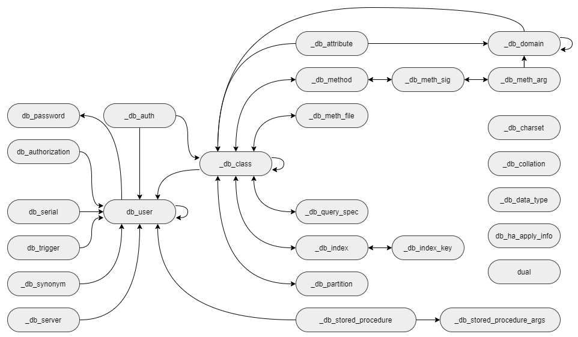

System Catalog¶
You can easily get various schema information from the SQL statement by using the system catalog virtual class. For example, you can get the following schema information by using the catalog virtual class.
-- Classes that refer to the 'b_user' class
SELECT class_name
FROM db_attribute
WHERE domain_class_name = 'db_user';
-- The number of classes that the current user can access
SELECT COUNT(*)
FROM db_class;
-- Attribute of the 'db_user' class
SELECT attr_name, data_type
FROM db_attribute
WHERE class_name = 'db_user';
System Catalog Classes¶
To define a catalog virtual class, define a catalog class first. The figure below shows catalog classes to be added and their relationships. The arrows represent the reference relationship between classes, and the classes that start with an underline (_) are catalog classes.
Added catalog classes represent information about all classes, attributes and methods in the database. Catalog classes are made up of class composition hierarchy and designed to have OIDs of catalog class instances for cross reference.
| Class Name | Description |
|---|---|
| _db_class | Class information |
| _db_attribute | Attribute information |
| _db_domain | Domain information |
| _db_charset | Charset information |
| _db_collation | Collation information |
| _db_method | Method information |
| _db_meth_sig | Configuration information of C functions on the method |
| _db_meth_arg | Method argument information |
| _db_meth_file | File information in which the method is defined |
| _db_query_spec | The SQL statement of a virtual class |
| _db_index | Index information |
| _db_index_key | Key information on an index |
| _db_auth | User authorization information of classes |
| _db_data_type | The data type supported by CUBRID |
| _db_partition | Partition information |
| _db_stored_procedure | Java stored procedure information |
| _db_stored_procedure_args | Java stored procedure argument information |
| _db_server | Server information for DBLink |
| _db_synonym | Target object information of synonyms |
| db_user | User information |
| db_authorization | User authorization information of classes |
| db_serial | Serial information |
| db_trigger | Trigger information |
| db_ha_apply_info | The progress status the applylogdb utility applies replication logs |
| dual | Dummy table |
_db_class¶
Represents class information. An index for unique_name and an index for class_name and owner are created.
| Attribute Name | Data Type | Description |
|---|---|---|
| class_of | object | A class object. Represents a meta information object for the class stored in the system. |
| unique_name | VARCHAR(255) | Class name prefixed with schema name |
| class_name | VARCHAR(255) | Class name |
| class_type | INTEGER | 0 for a class, and 1 for a virtual class |
| is_system_class | INTEGER | 0 for a user-defined class, and 1 for a system class |
| owner | db_user | Class owner |
| inst_attr_count | INTEGER | The number of instance attributes |
| class_attr_count | INTEGER | The number of class attributes |
| shared_attr_count | INTEGER | The number of shared attributes |
| inst_meth_count | INTEGER | The number of instance methods |
| class_meth_count | INTEGER | The number of class methods |
| collation_id | INTEGER | Collation id |
| tde_algorithm | INTEGER | TDE encryption algorithm 0: NONE, 1: AES, 2: ARIA |
| sub_classes | SEQUENCE OF _db_class | Class one level down |
| super_classes | SEQUENCE OF _db_class | Class one level up |
| inst_attrs | SEQUENCE OF _db_attribute | Instance attribute |
| class_attrs | SEQUENCE OF _db_attribute | Class attribute |
| shared_attrs | SEQUENCE OF _db_attribute | Shared attribute |
| inst_meths | SEQUENCE OF _db_method | Instance method |
| class_meths | SEQUENCE OF _db_method | Class method |
| meth_files | SEQUENCE OF _db_methfile | File path in which the function for the method is located |
| query_specs | SEQUENCE OF _db_queryspec | SQL definition statement for a virtual class |
| indexes | SEQUENCE OF _db_index | Index created in the class |
| comment | VARCHAR(2048) | Comment to describe the class |
| partition | SEQUENCE of _db_partition | Partition information |
The following example shows how to retrieve all sub classes under the class owned by user ‘PUBLIC’ (for the child class female_event in the result, see the example in ADD SUPERCLASS Clause).
SELECT class_name, SEQUENCE(SELECT class_name FROM _db_class s WHERE s IN c.sub_classes)
FROM _db_class c
WHERE c.owner.name = 'PUBLIC' AND c.sub_classes IS NOT NULL;
class_name sequence((select class_name from _db_class s where s in c.sub_classes))
============================================
'event' {'female_event'}
Note
All examples of system catalog classes have been written in the csql utility. In this example, –no-auto-commit (inactive mode of auto-commit) and -u (specifying user DBA) options are used.
% csql --no-auto-commit -u dba demodb
_db_attribute¶
Represents attribute information. An index for class_of, attr_name and attr_type is created.
| Attribute Name | Data Type | Description |
|---|---|---|
| class_of | _db_class | Class to which the attribute belongs |
| attr_name | VARCHAR(255) | Attribute name |
| attr_type | INTEGER | Type defined for the attribute. 0 for an instance attribute, 1 for a class attribute, and 2 for a shared attribute. |
| from_class_of | _db_class | If the attribute is inherited, the super class in which the attribute is defined is specified. Otherwise, NULL is specified. |
| from_attr_name | VARCHAR(255) | Inherited attribute. If an attribute name has changed to resolve a name conflict, the original name define in the super class is specified. Otherwise, NULL is specified. |
| def_order | INTEGER | Order of attributes in the class. Begins with 0. If the attribute is inherited, the order is the one defined in the super class. For example, if class y inherits attribute a from class x and a was first defined in x, def_order becomes 0. |
| data_type | INTEGER | Data type of the attribute. One of the values specified in the “Data Types Supported by CUBRID” table below. |
| default_value | VARCHAR(255) | Default value. Stores as a character string regardless of data types. If there is no default value, NULL. If the default value is NULL, NULL is used. If the data type is an object, ‘volume id | page id | slot id’ is used. If the data type is a collection, ‘{element 1, element 2, … is used. |
| domains | SEQUENCE OF _db_domain | Domain information of the data type |
| is_nullable | INTEGER | 0 if a not null constraint is configured, and 1 otherwise. |
| comment | VARCHAR(1024) | Comment to describe the attribute. |
Data Types Supported by CUBRID
| Value | Meaning | Value | Meaning |
|---|---|---|---|
| 1 | INTEGER | 23 | BIT |
| 2 | FLOAT | 24 | VARBIT |
| 3 | DOUBLE | 25 | CHAR |
| 4 | STRING | 27 | VARCHAR |
| 5 | OBJECT | 31 | BIGINT |
| 6 | SET | 32 | DATETIME |
| 7 | MULTISET | 33 | BLOB |
| 8 | SEQUENCE | 34 | CLOB |
| 9 | ELO | 35 | ENUM |
| 10 | TIME | 36 | TIMESTAMPTZ |
| 11 | TIMESTAMP | 37 | TIMESTAMPLTZ |
| 12 | DATE | 38 | DATETIMETZ |
| 18 | SHORT | 39 | DATETIMELTZ |
| 22 | NUMERIC | 40 | JSON |
Character Sets Supported by CUBRID
| Value | Meaning |
|---|---|
| 0 | US English - ASCII encoding |
| 2 | Binary |
| 3 | Latin 1 - ISO 8859 encoding |
| 4 | KSC 5601 1990 - EUC encoding |
| 5 | UTF8 - UTF8 encoding |
The following example shows how to retrieve user classes (from_class_of.is_system_class = 0) among the ones owned by user ‘PUBLIC’.’
SELECT class_of.class_name, attr_name
FROM _db_attribute
WHERE class_of.owner.name = 'PUBLIC' AND from_class_of.is_system_class = 0
ORDER BY 1, def_order;
class_of.class_name attr_name
============================================
'female_event' 'code'
'female_event' 'sports'
'female_event' 'name'
'female_event' 'gender'
'female_event' 'players'
_db_domain¶
Represents domain information. Indexes for object_of and data_type are created.
| Attribute Name | Data Type | Description |
|---|---|---|
| object_of | object | Attribute that refers to the domain, which can be a method parameter or domain |
| data_type | INTEGER | Data type of the domain (a value in the “Value” column of the “Data Types Supported by CUBRID” table in _db_attribute) |
| prec | INTEGER | Precision of the data type. 0 is used if the precision is not specified. |
| scale | INTEGER | Scale of the data type. 0 is used if the scale is not specified. |
| class_of | _db_class | Domain class if the data type is an object, NULL otherwise. |
| code_set | INTEGER | Character set (value of table “character sets supported by CUBRID” in _db_attribute) if it is character data type. 0 otherwise. |
| collation_id | INTEGER | Collation id |
| enumeration | SEQUENCE OF STRING | String printed enumeration type definition |
| set_domains | SEQUENCE OF _db_domain | Domain information about the data type of collection element if it is collection data type. NULL otherwise. |
_db_charset¶
Represents charset information.
| Attribute Name | Data type | Description |
|---|---|---|
| charset_id | INTEGER | Charset ID |
| charset_name | CHARACTER VARYING(32) | Charset name |
| default_collation | INTEGER | Default collation ID |
| char_size | INTEGER | One character’s byte size |
_db_collation¶
The information on collation.
| Attribute Name | Data Type | Description |
|---|---|---|
| coll_id | INTEGER | Collation ID |
| coll_name | VARCHAR(32) | Collation name |
| charset_id | INTEGER | Charset ID |
| built_in | INTEGER | Built-in or not while installing the product (0: Not built-in, 1: Built-in) |
| expansions | INTEGER | Expansion support (0: Not supported, 1: Supported) |
| contractions | INTEGER | Contraction support (0: Not supported, 1: Supported) |
| uca_strength | INTEGER | Weight strength |
| checksum | VARCHAR(32) | Checksum of a collation file |
_db_method¶
Represents method information. An index for class_of and meth_name is created.
| Attribute Name | Data Type | Description |
|---|---|---|
| class_of | _db_class | Class to which the method belongs |
| meth_type | INTEGER | Type of the method defined in the class. 0 for an instance method, and 1 for a class method. |
| from_class_of | _db_class | If the method is inherited, the super class in which it is defined is used otherwise NULL |
| from_meth_name | VARCHAR(255) | If the method is inherited and its name is changed to resolve a name conflict, the original name defined in the super class is used otherwise NULL |
| meth_name | VARCHAR(255) | Method name |
| signatures | SEQUENCE OF _db_meth_sig | C function executed when the method is called |
The following example shows how to retrieve class methods of the class with a class method (c.class_meth_count > 0), among classes owned by user ‘DBA.’
SELECT class_name, SEQUENCE(SELECT meth_name
FROM _db_method m
WHERE m in c.class_meths)
FROM _db_class c
WHERE c.owner.name = 'DBA' AND c.class_meth_count > 0
ORDER BY 1;
class_name sequence((select meth_name from _db_method m where m in c.class_meths))
============================================
'db_serial' {'change_serial_owner'}
'db_authorizations' {'add_user', 'drop_user', 'find_user', 'print_authorizations', 'info', 'change_owner', 'change_trigg
r_owner', 'get_owner'}
'db_authorization' {'check_authorization'}
'db_user' {'add_user', 'drop_user', 'find_user', 'login'}
'db_root' {'add_user', 'drop_user', 'find_user', 'print_authorizations', 'info', 'change_owner', 'change_trigg
r_owner', 'get_owner', 'change_sp_owner'}
_db_meth_sig¶
Represents configuration information of C functions on the method. An index for meth_of is created.
| Attribute Name | Data Type | Description |
|---|---|---|
| meth_of | _db_method | Method for the function information |
| arg_count | INTEGER | The number of input arguments of the function |
| func_name | VARCHAR(255) | Function name |
| return_value | SEQUENCE OF _db_meth_arg | Return value of the function |
| arguments | SEQUENCE OF _db_meth_arg | Input arguments of the function |
_db_meth_arg¶
Represents method argument information. An index for meth_sig_of is created.
| Attribute Name | Data Type | Description |
|---|---|---|
| meth_sig_of | _db_meth_sig | Information of the function to which the argument belongs |
| data_type | INTEGER | Data type of the argument (a value in the “Value” column of the “Data Types Supported by CUBRID” in _db_attribute) |
| index_of | INTEGER | Order of the argument listed in the function definition. Begins with 0 if it is a return value, and 1 if it is an input argument. |
| domains | SEQUENCE OF _db_domain | Domain of the argument |
_db_meth_file¶
Represents information of a file in which a function is defined. An index for class_of is created.
| Attribute Name | Data Type | Description |
|---|---|---|
| class_of | _db_class | Class to which the method file information belongs |
| from_class_of | _db_class | If the file information is inherited, the super class in which it is defined is used otherwise, NULL |
| path_name | VARCHAR(255) | File path in which the method is located |
_db_query_spec¶
Represents the SQL statement of a virtual class. An index for class_of is created.
The data type of attribute ‘spec’ is VARCHAR (4096) for prior versions including 10.1 Patch 3.
| Attribute Name | Data Type | Description | Classification (10.1 Only) |
|---|---|---|---|
| class_of | _db_class | Class information of the virtual class | |
| spec | VARCHAR(1073741823) | SQL definition statement of the virtual class | 10.1 Patch 4 or later |
| VARCHAR(4096) | 10.1 Patch 3 or earlier |
_db_index¶
Represents index information. An index for class_of is created.
| Attribute Name | Data Type | Description |
|---|---|---|
| class_of | _db_class | Class to which to index belongs |
| index_name | varchar(255) | Index name |
| is_unique | INTEGER | 1 if the index is unique, and 0 otherwise. |
| key_count | INTEGER | The number of attributes that comprise the key |
| key_attrs | SEQUENCE OF _db_index_key | Attributes that comprise the key |
| is_reverse | INTEGER | 1 for a reverse index, and 0 otherwise. |
| is_primary_key | INTEGER | 1 for a primary key, and 0 otherwise. |
| is_foreign_key | INTEGER | 1 for a foreign key, and 0 otherwise. |
| filter_expression | VARCHAR(255) | The conditions of filtered indexes |
| have_function | INTEGER | 1 for a function index, and 0 otherwise. |
| comment | VARCHAR (1024) | Comment to describe the index |
| status | INTEGER | Index status |
The following example shows how to retrieve names of indexes that belong to the class.
SELECT class_of.class_name, index_name
FROM _db_index
ORDER BY 1;
class_of.class_name index_name
============================================
'_db_attribute' 'i__db_attribute_class_of_attr_name'
'_db_auth' 'i__db_auth_grantee'
'_db_class' 'i__db_class_class_name'
'_db_domain' 'i__db_domain_object_of'
'_db_domain' 'i__db_domain_data_type'
'_db_index' 'i__db_index_class_of'
'_db_index_key' 'i__db_index_key_index_of'
'_db_meth_arg' 'i__db_meth_arg_meth_sig_of'
'_db_meth_file' 'i__db_meth_file_class_of'
'_db_meth_sig' 'i__db_meth_sig_meth_of'
'_db_method' 'i__db_method_class_of_meth_name'
'_db_partition' 'i__db_partition_class_of_pname'
'_db_query_spec' 'i__db_query_spec_class_of'
'_db_stored_procedure' 'u__db_stored_procedure_sp_name'
'_db_stored_procedure_args' 'i__db_stored_procedure_args_sp_name'
'athlete' 'pk_athlete_code'
'db_serial' 'pk_db_serial_name'
'db_user' 'i_db_user_name'
'event' 'pk_event_code'
'game' 'pk_game_host_year_event_code_athlete_code'
'game' 'fk_game_event_code'
'game' 'fk_game_athlete_code'
'history' 'pk_history_event_code_athlete'
'nation' 'pk_nation_code'
'olympic' 'pk_olympic_host_year'
'participant' 'pk_participant_host_year_nation_code'
'participant' 'fk_participant_host_year'
'participant' 'fk_participant_nation_code'
'record' 'pk_record_host_year_event_code_athlete_code_medal'
'stadium' 'pk_stadium_code'
_db_index_key¶
Represents key information on an index. An index for index_of is created.
| Attribute Name | Data Type | Description |
|---|---|---|
| index_of | _db_index | Index to which the key attribute belongs |
| key_attr_name | VARCHAR(255) | Name of the attribute that comprises the key |
| key_order | INTEGER | Order of the attribute in the key. Begins with 0. |
| asc_desc | INTEGER | 1 if the order of attribute values is descending, and 0 otherwise. |
| key_prefix_length | INTEGER | Length of prefix to be used as a key |
| func | VARCHAR(1023) | Functional expression of function based index |
The following example shows how to retrieve the names of index that belongs to the class.
SELECT class_of.class_name, SEQUENCE(SELECT key_attr_name
FROM _db_index_key k
WHERE k in i.key_attrs)
FROM _db_index i
WHERE key_count >= 2;
class_of.class_name sequence((select key_attr_name from _db_index_key k where k in
i.key_attrs))
============================================
'_db_partition' {'class_of', 'pname'}
'_db_method' {'class_of', 'meth_name'}
'_db_attribute' {'class_of', 'attr_name'}
'participant' {'host_year', 'nation_code'}
'game' {'host_year', 'event_code', 'athlete_code'}
'record' {'host_year', 'event_code', 'athlete_code', 'medal'}
'history' {'event_code', 'athlete'}
_db_auth¶
Represents user authorization information of the class. An index for the grantee is created.
| Attribute Name | Data Type | Description |
|---|---|---|
| grantor | db_user | Authorization grantor |
| grantee | db_user | Authorization grantee |
| class_of | _db_class | Class object to which authorization is to be granted |
| auth_type | VARCHAR(7) | Type name of the authorization granted |
| is_grantable | INTEGER | 1 if authorization for the class can be granted to other users, and 0 otherwise. |
Authorization types supported by CUBRID are as follows:
- SELECT
- INSERT
- UPDATE
- DELETE
- ALTER
- INDEX
- EXECUTE
The following example shows how to retrieve authorization information defined in the class db_trig.
SELECT grantor.name, grantee.name, auth_type
FROM _db_auth
WHERE class_of.class_name = 'db_trig';
grantor.name grantee.name auth_type
==================================================================
'DBA' 'PUBLIC' 'SELECT'
_db_data_type¶
Represents the data type supported by CUBRID (see the “Data Types Supported by CUBRID” table in _db_attribute).
| Attribute Name | Data Type | Description |
|---|---|---|
| type_id | INTEGER | Data type identifier. Corresponds to the “Value” column in the “Data Types Supported by CUBRID” table. |
| type_name | VARCHAR(9) | Data type name. Corresponds to the “Meaning” column in the “Data Types Supported by CUBRID” table. |
The following example shows how to retrieve attributes and type names of the event class.
SELECT a.attr_name, t.type_name
FROM _db_attribute a join _db_data_type t ON a.data_type = t.type_id
WHERE class_of.class_name = 'event'
ORDER BY a.def_order;
attr_name type_name
============================================
'code' 'INTEGER'
'sports' 'STRING'
'name' 'STRING'
'gender' 'CHAR'
'players' 'INTEGER'
_db_partition¶
Represents partition information. An index for class_of and pname is created.
| Attribute Name | Data Type | Description |
|---|---|---|
| class_of | _db_class | OID of the parent class |
| pname | VARCHAR(255) | Parent - NULL |
| ptype | INTEGER | 0 - HASH 1 - RANGE 2 - LIST |
| pexpr | VARCHAR(255) | Parent only |
| pvalues | SEQUENCE OF | Parent - Column name, Hash size RANGE - MIN/MAX value : - Infinite MIN/MAX is stored as NULL LIST - value list |
| comment | VARCHAR(1024) | Comment to describe the partition |
_db_stored_procedure¶
Represents Java stored procedure information. An index for sp_name is created.
| Attribute Name | Data Type | Description |
|---|---|---|
| sp_name | VARCHAR(255) | Stored procedure name |
| sp_type | INTEGER | Stored procedure type (function or procedure) |
| return_type | INTEGER | Return value type |
| arg_count | INTEGER | The number of arguments |
| args | SEQUENCE OF _db_stored_procedure_args | Argument list |
| lang | INTEGER | Implementation language (currently, Java) |
| target | VARCHAR(4096) | Name of the Java method to be executed |
| owner | db_user | Owner |
| comment | VARCHAR (1024) | Comment to describe the stored procedure |
_db_stored_procedure_args¶
Represents Java stored procedure argument information. An index for sp_name is created.
| Attribute Name | Data Type | Description |
|---|---|---|
| sp_name | VARCHAR(255) | Stored procedure name |
| index_of | INTEGER | Order of the arguments |
| arg_name | VARCHAR(255) | Argument name |
| data_type | INTEGER | Data type of the argument |
| mode | INTEGER | Mode (IN, OUT, INOUT) |
| comment | VARCHAR (1024) | Comment to describe the argument |
_db_server¶
| Attribute Name | Data Type | Description |
|---|---|---|
| link_name | VARCHAR(255) | Connection name |
| host | VARCHAR(255) | Hostname of a server |
| port | INTEGER | Connection port of a server |
| db_name | VARCHAR(255) | Database name of a server |
| user_name | VARCHAR(255) | Database user name of a server |
| password | VARCHAR(1073741823) | Database user password of a server |
| properties | VARCHAR(2048) | Property information used for connection |
| owner | db_user | The owner of this connection information |
| comment | VARCHAR(1024) | Comment to describe the server |
_db_synonym¶
Represents target object information of synonyms. An index for unique_name and an index for name owner, and is_public are created.
| Attribute Name | Data Type | Description |
|---|---|---|
| unique_name | VARCHAR(255) | Name prefixed with the schema name of the synonym |
| name | VARCHAR(255) | The name of the synonym |
| owner | db_user | The owner of the synonym |
| is_public | INTEGER | 1 for a public synonym, and 0 for a private synonym. |
| target_unique_name | VARCHAR(255) | Name prefixed with the schema name of the target object |
| target_name | VARCHAR(255) | The name of the target object |
| target_owner | db_user | The owner name of the target object |
| comment | VARCHAR(2048) | Comment to describe the synonym |
Warning
It does not support public synonym yet.
db_user¶
| Attribute Name | Data Type | Description |
|---|---|---|
| name | VARCHAR(1073741823) | User name |
| id | INTEGER | User identifier |
| password | db_password | User password. Not displayed to the user. |
| direct_groups | SET OF db_user | Groups to which the user belongs directly |
| groups | SET OF db_user | Groups to which the user belongs directly or indirectly |
| authorization | db_authorization | Information of the authorization owned by the user |
| triggers | SEQUENCE OF object | Triggers that occur due to user actions |
| comment | VARCHAR (1024) | Comment to describe the user |
Function Names
- set_password ()
- set_password_encoded ()
- set_password_encoded_sha1 ()
- add_member ()
- drop_member ()
- print_authorizations ()
- add_user ()
- drop_user ()
- find_user ()
- login ()
db_authorization¶
| Attribute Name | Data Type | Description |
|---|---|---|
| owner | db_user | User information |
| grants | SEQUENCE OF object | Sequence of {object for which the user has authorization, authorization grantor of the object, authorization type} |
Method Name
- check_authorization (varchar(255), integer)
db_serial¶
| Attribute Name | Data Type | Description |
|---|---|---|
| unique_name | VARCHAR(1073741823) | Serial name prefixed with schema name. |
| name | VARCHAR(1073741823) | Serial name. |
| current_val | NUMERIC(38,0) | Current serial value. Default is 1. |
| increment_val | NUMERIC(38,0) | Interval of serial values. Default is 1. |
| max_val | NUMERIC(38,0) | The maximum value of the serial. Default is 99999999999999999999999999999999999999. |
| min_val | NUMERIC(38,0) | The minimum value of the cereal. Default is 1. |
| cyclic | INTEGER | 1 (CYCLE) if a value can be generated by cycling after reaching the maximum or minimum value of the serial; 0 (NOCYCLE) if not. |
| started | INTEGER | 1 if the value has been created at least once after creation, otherwise 0. |
| class_name | VARCHAR(1073741823) | AUTO_INCREMENT In case of serial, the table name is stored. or NULL. |
| att_name | VARCHAR(1073741823) | AUTO_INCREMENT In case of serial, the column name is stored. or NULL. |
| cached_num | INTEGER | The number of serial values to pre-create in memory to improve performance. Default is 0. |
| comment | VARCHAR (1024) | Comment to describe the serial. |
db_trigger¶
| Attribute Name | Data Type | Description |
|---|---|---|
| owner | db_user | Trigger owner |
| unique_name | VARCHAR(1073741823) | Trigger name prefixed with schema name |
| name | VARCHAR(1073741823) | Trigger name |
| status | INTEGER | 1 for INACTIVE, and 2 for ACTIVE. The default value is 2. |
| priority | DOUBLE | Execution priority between triggers. The default value is 0. |
| event | INTEGER | 0 is set for UPDATE, 1 for UPDATE STATEMENT, 2 for DELETE, 3 for DELETE STATEMENT, 4 for INSERT, 5 for INSERT STATEMENT, 8 for COMMIT, and 9 for ROLLBACK. |
| target_class | object | Class object for the trigger target class |
| target_attribute | VARCHAR(1073741823) | Trigger target attribute name. If the target attribute is not specified, NULL* is used. |
| target_class_attribute | INTEGER | If the target attribute is an instance attribute, 0 is used. If it is a class attribute, 1 is used. The default value is 0. |
| condition_type | INTEGER | If a condition exist, 1; otherwise NULL. |
| condition | VARCHAR(1073741823) | Action condition specified in the IF statement |
| condition_time | INTEGER | 1 for BEFORE, 2 for AFTER, and 3 for DEFERRED if a condition exists; NULL, otherwise. |
| action_type | INTEGER | 1 for one of INSERT, UPDATE, DELETE, and CALL, 2 for REJECT, 3 for INVALIDATE_TRANSACTION, and 4 for PRINT. |
| action_definition | VARCHAR(1073741823) | Execution statement to be triggered |
| action_time | INTEGER | 1 for BEFORE, 2 for AFTER, and 3 for DEFERRED. |
| comment | VARCHAR (1024) | Comment to describe the trigger |
db_ha_apply_info¶
A table that stores the progress status every time the applylogdb utility applies replication logs. This table is updated at every point the applylogdb utility commits, and the accumulative count of operations are stored in the *_counter column. The meaning of each column is as follows:
| Column Name | Column Type | Description |
|---|---|---|
| db_name | VARCHAR(255) | Name of the database stored in the log |
| db_creation_time | DATETIME | Creation time of the source database for the log to be applied |
| copied_log_path | VARCHAR(4096) | Path to the log file to be applied |
| committed_lsa_pageid | BIGINT | The page id of commit log lsa reflected last. Although applylogdb is restarted, the logs before last_committed_lsa are not reflected again. |
| committed_lsa_offset | INTEGER | The offset of commit log lsa reflected last. Although applylogdb is restarted, the logs before last_committed_lsa are not reflected again. |
| committed_rep_pageid | BIGINT | The page id of the replication log lsa reflected last. Check whether the reflection of replication has been delayed or not. |
| committed_rep_offset | INTEGER | The offset of the replication log lsa reflected last. Check whether the reflection of replication has been delayed or not. |
| append_lsa_page_id | BIGINT | The page id of the last replication log lsa at the last reflection. Saves append_lsa of the replication log header that is being processed by applylogdb at the time of reflecting the replication. Checks whether the reflection of replication has been delayed or not at the time of reflecting the replication log. |
| append_lsa_offset | INTEGER | The offset of the last replication log lsa at the last reflection. Saves append_lsa of the replication log header that is being processed by applylogdb at the time of reflecting the replication. Checks whether the reflection of replication has been delayed or not at the time of reflecting the replication log. |
| eof_lsa_page_id | BIGINT | The page id of the replication log EOF lsa at the last reflection. Saves eof_lsa of the replication log header that is being processed by applylogdb at the time of reflecting the replication. Checks whether the reflection of replication has been delayed or not at the time of reflecting the replication log. |
| eof_lsa_offset | INTEGER | The offset of the replication log EOF lsa at the last reflection. Saves eof_lsa of the replication log header that is being processed by applylogdb at the time of reflecting the replication. Checks whether the reflection of replication has been delayed or not at the time of reflecting the replication log. |
| final_lsa_pageid | BIGINT | The pageid of replication log lsa processed last by applylogdb. Checks whether the reflection of replication has been delayed or not. |
| final_lsa_offset | INTEGER | The offset of replication log lsa processed last by applylogdb. Checks whether the reflection of replication has been delayed or not. |
| required_page_id | BIGINT | The smallest page which should not be deleted by the log_max_archives parameter. The log page number from which the replication will be reflected. |
| required_page_offset | INTEGER | The offset of the log page from which the replication will be reflected. |
| log_record_time | DATETIME | Timestamp included in replication log committed in the slave database, i.e. the creation time of the log |
| log_commit_time | DATETIME | The time of reflecting the last commit log |
| last_access_time | DATETIME | The final update time of the db_ha_apply_info catalog |
| status | INTEGER | Progress status (0: IDLE, 1: BUSY) |
| insert_counter | BIGINT | Number of times that applylogdb was inserted |
| update_counter | BIGINT | Number of times that applylogdb was updated |
| delete_counter | BIGINT | Number of times that applylogdb was deleted |
| schema_counter | BIGINT | Number of times that applylogdb changed the schema |
| commit_counter | BIGINT | Number of times that applylogdb was committed |
| fail_counter | BIGINT | Number of times that applylogdb failed to be inserted/updated/deleted/committed and to change the schema |
| start_time | DATETIME | Time when the applylogdb process accessed the slave database |
dual¶
The dual class is a one-row, one-column table that is used as a dummy table. It is used to select a constant, expression, or pseudo column such as SYS_DATE or USER. Pseudo columns can be provided as functions in CUBRID. More details and examples are in Operators and Functions. However, it is not mandatory to have FROM clause when selecting a constant, expression, or pseudo column because dual class will be referenced automatically. Like other system catalog classes, dual class is created to be owned by dba but dba can only execute SELECT operation. Unlike other system catalog classes, however, any user can execute SELECT operation on dual class.
| Attribute Name | Data Type | Description |
|---|---|---|
| dummy | VARCHAR(1) | Value used for dummy purpose only |
The following example shows the result which ran the query that select pseudo column after inputting “;plan detail” or “SET OPTIMIZATION LEVEL 513;” in CSQL (Viewing Query Plan). This shows the dual class is referenced automatically even if there is no FROM clause.
SET OPTIMIZATION LEVEL 513;
SELECT SYS_DATE;
Join graph segments (f indicates final):
seg[0]: [0]
Join graph nodes:
node[0]: dual dual(1/1) (loc -1)
Query plan:
sscan
class: dual node[0]
cost: 1 card 1
Query stmt:
select SYS_DATE from dual dual
=== <Result of SELECT Command in Line 1> ===
SYS_DATE
============
11/26/2020
System Catalog Virtual Class¶
General users can only see information of classes for which they have authorization through system catalog virtual classes. This section explains which information each system catalog virtual class represents, and virtual class definition statements.
| Virtual Class Name | Description |
|---|---|
| DB_CLASS | Class information |
| DB_DIRECT_SUPER_CLASS | Super class information |
| DB_VCLASS | The SQL statement of a virtual class |
| DB_ATTRIBUTE | Attribute information |
| DB_ATTR_SETDOMAIN_ELM | Data type for elements of collection type (SET, MULTISET, SEQUENCE) attributes |
| DB_CHARSET | Charset information |
| DB_COLLATION | Collation information |
| DB_METHOD | Method information |
| DB_METH_ARG | Method argument information |
| DB_METH_ARG_SETDOMAIN_ELM | Data type for elements of collection type (SET, MULTISET, SEQUENCE) argument |
| DB_METH_FILE | File information in which the method is defined |
| DB_INDEX | Index information |
| DB_INDEX_KEY | Key information on an index |
| DB_AUTH | User authorization information of classes |
| DB_TRIG | Trigger information |
| DB_PARTITION | Partition information |
| DB_STORED_PROCEDURE | Java stored procedure information |
| DB_STORED_PROCEDURE_ARGS | Java stored procedure argument information |
| DB_SERVER | Server information for DBLink |
| DB_SYNONYM | Target object information of synonyms |
DB_CLASS¶
Represents information of classes for which the current user has access authorization to a database.
| Attribute Name | Data Type | Description |
|---|---|---|
| class_name | VARCHAR(255) | Class name |
| owner_name | VARCHAR(255) | Owner Name of class |
| class_type | VARCHAR(6) | ‘CLASS’ for a class, and ‘VCLASS’ for a virtual class |
| is_system_class | VARCHAR(3) | ‘YES’ for a system class, and ‘NO’ otherwise. |
| tde_algorithm | VARCHAR(32) | TDE encryption algorithm |
| partitioned | VARCHAR(3) | ‘YES’ for a partitioned group class, and ‘NO’ otherwise. |
| is_reuse_oid_class | VARCHAR(3) | ‘YES’ for a REUSE_OID class, and ‘NO’ otherwise. |
| collation | VARCHAR(32) | Collation name |
| comment | VARCHAR(2048) | Comment to describe the class |
The following example shows how to retrieve classes owned by the current user.
/* CURRENT_USER: PUBLIC */
SELECT class_name, owner_name
FROM db_class
WHERE owner_name = CURRENT_USER;
class_name owner_name
============================================
'stadium' 'PUBLIC'
'code' 'PUBLIC'
'nation' 'PUBLIC'
'event' 'PUBLIC'
'athlete' 'PUBLIC'
'participant' 'PUBLIC'
'olympic' 'PUBLIC'
'game' 'PUBLIC'
'record' 'PUBLIC'
'history' 'PUBLIC'
'female_event' 'PUBLIC'
The following example shows how to retrieve virtual classes that can be accessed by the current user.
SELECT class_name
FROM db_class
WHERE class_type = 'VCLASS';
class_name
======================
'db_synonym'
'db_server'
'db_charset'
'db_collation'
'db_stored_procedure_args'
'db_stored_procedure'
'db_partition'
'db_trig'
'db_auth'
'db_index_key'
'db_index'
'db_meth_file'
'db_meth_arg_setdomain_elm'
'db_meth_arg'
'db_method'
'db_attr_setdomain_elm'
'db_attribute'
'db_vclass'
'db_direct_super_class'
'db_class'
The following example shows how to retrieve system classes that can be accessed by the current user.
SELECT class_name
FROM db_class
WHERE is_system_class = 'YES' AND class_type = 'CLASS'
ORDER BY class_name;
class_name
======================
'db_authorization'
'db_authorizations'
'db_ha_apply_info'
'db_root'
'db_serial'
'db_user'
'dual'
DB_DIRECT_SUPER_CLASS¶
Represents the names of super classes (if any) of the class for which the current user has access authorization to a database.
| Attribute Name | Data Type | Description |
|---|---|---|
| class_name | VARCHAR(255) | Class name |
| owner_name | VARCHAR(255) | Owner Name of class |
| super_class_name | VARCHAR(255) | Super class name |
| super_owner_name | VARCHAR(255) | Owner Name of super class |
The following example shows how to retrieve super classes of the female_event class. (see ADD SUPERCLASS Clause)
SELECT super_class_name
FROM db_direct_super_class
WHERE class_name = 'female_event';
super_class_name
======================
'event'
The following example shows how to retrieve super classes of the class owned by the current user.
/* CURRENT_USER: PUBLIC */
SELECT class_name, super_class_name
FROM db_direct_super_class
WHERE owner_name = CURRENT_USER
ORDER BY class_name;
class_name super_class_name
============================================
'female_event' 'event'
DB_VCLASS¶
Represents SQL definition statements of virtual classes for which the current user has access authorization to a database.
The data type of attribute ‘vclass_def’ is VARCHAR (4096) for prior versions including 10.1 Patch 3.
| Attribute Name | Data Type | Description | Classification (10.1 Only) |
|---|---|---|---|
| vclass_name | VARCHAR(255) | Virtual class name | |
| owner_name | VARCHAR(255) | Owner name of virtual class | |
| vclass_def | VARCHAR(1073741823) | SQL definition statement of the virtual class | 10.1 Patch 4 or later |
| VARCHAR(4096) | 10.1 Patch 3 or earlier | ||
| comment | VARCHAR(2048) | Comment to describe the virtual class |
The following example shows how to retrieve SQL definition statements of the db_class virtual class.
SELECT vclass_def
FROM db_vclass
WHERE vclass_name = 'db_class';
vclass_def
======================
'SELECT [c].[class_name], CAST([c].[owner].[name] AS VARCHAR(255)), CASE [c].[class_type] WHEN 0 THEN 'CLASS' WHEN 1 THEN 'VCLASS' ELSE 'UNKNOW' END, CASE WHEN MOD([c].[is_system_class], 2) = 1 THEN 'YES' ELSE 'NO' END, CASE [c].[tde_algorithm] WHEN 0 THEN 'NONE' WHEN 1 THEN 'AES' WHEN 2 THEN 'ARIA' END, CASE WHEN [c].[sub_classes] IS NULL THEN 'NO' ELSE NVL((SELECT 'YES' FROM [_db_partition] [p] WHERE [p].[class_of] = [c] and [p].[pname] IS NULL), 'NO') END, CASE WHEN MOD([c].[is_system_class] / 8, 2) = 1 THEN 'YES' ELSE 'NO' END, [coll].[coll_name], [c].[comment] FROM [_db_class] [c], [_db_collation] [coll] WHERE [c].[collation_id] = [coll].[coll_id] AND (CURRENT_USER = 'DBA' OR {[c].[owner].[name]} SUBSETEQ (SELECT SET{CURRENT_USER} + COALESCE(SUM(SET{[t].[g].[name]}), SET{}) FROM [db_user] [u], TABLE([groups]) AS [t]([g]) WHERE [u].[name] = CURRENT_USER) OR {[c]} SUBSETEQ ( SELECT SUM(SET{[au].[class_of]}) FROM [_db_auth] [au] WHERE {[au].[grantee].[name]} SUBSETEQ ( SELECT SET{CURRENT_USER} + COALESCE(SUM(SET{[t].[g].[name]}), SET{}) FROM [db_user] [u], TABLE([groups]) AS [t]([g]) WHERE [u].[name] = CURRENT_USER) AND [au].[auth_type] = 'SELECT'))'
DB_ATTRIBUTE¶
Represents the attribute information of a class for which the current user has access authorization in the database.
| Attribute Name | Data Type | Description |
|---|---|---|
| attr_name | VARCHAR(255) | Attribute name |
| class_name | VARCHAR(255) | Name of the class to which the attribute belongs |
| owner_name | VARCHAR(255) | Owner name of the class to which the attribute belongs |
| attr_type | VARCHAR(8) | ‘INSTANCE’ for an instance attribute, ‘CLASS’ for a class attribute, and ‘SHARED’ for a shared attribute. |
| def_order | INTEGER | Order of attributes in the class. Begins with 0. If the attribute is inherited, the order is the one defined in the super class. |
| from_class_name | VARCHAR(255) | If the attribute is inherited, the super class in which it is defined is used. Otherwise, NULL. |
| from_owner_name | VARCHAR(255) | If the attribute is inherited, the owner name of the super class in which it is defined is used. Otherwise, NULL. |
| from_attr_name | VARCHAR(255) | If the attribute is inherited and its name is changed to resolve a name conflict, the original name defined in the super class is used. Otherwise, NULL. |
| data_type | VARCHAR(9) | Data type of the attribute (one in the “Meaning” column of the “Data Types Supported by CUBRID” table in _db_attribute) |
| prec | INTEGER | Precision of the data type. 0 is used if the precision is not specified. |
| scale | INTEGER | Scale of the data type. 0 is used if the scale is not specified. |
| charset | VARCHAR (32) | charset name |
| collation | VARCHAR (32) | collation name |
| domain_class_name | VARCHAR(255) | Domain class name if the data type is an object. NULL otherwise. |
| domain_owner_name | VARCHAR(255) | Owner name of the domain class if the data type is an object. NULL otherwise. |
| default_value | VARCHAR(255) | Saved as a character string by default, regardless of data types. If no default value is specified, NULL is stored. If a default value is NULL, it is displayed as ‘NULL’. An object data type is represented as ‘volume id | page id | slot id’ while a set data type is represented as ‘{element 1, element 2, … }’. |
| is_nullable | VARCHAR(3) | ‘NO’ if a not null constraint is set, and ‘YES’ otherwise. |
| comment | VARCHAR(1024) | Comment to describe the attribute. |
The following example shows how to retrieve attributes and data types of the event class.
SELECT attr_name, data_type, domain_class_name
FROM db_attribute
WHERE class_name = 'event'
ORDER BY def_order;
attr_name data_type domain_class_name
==================================================================
'code' 'INTEGER' NULL
'sports' 'STRING' NULL
'name' 'STRING' NULL
'gender' 'CHAR' NULL
'players' 'INTEGER' NULL
The following example shows how to retrieve attributes of the female_event class and its super class.
SELECT attr_name, from_class_name
FROM db_attribute
WHERE class_name = 'female_event'
ORDER BY def_order;
attr_name from_class_name
============================================
'code' 'event'
'sports' 'event'
'name' 'event'
'gender' 'event'
'players' 'event'
The following example shows how to retrieve classes whose attribute names are similar to name, among the ones owned by the current user. (The user is PUBLIC.)
/* CURRENT_USER: PUBLIC */
SELECT class_name, attr_name
FROM db_attribute
WHERE owner_name = CURRENT_USER AND attr_name like '%name%'
ORDER BY class_name;
class_name attr_name
============================================
'athlete' 'name'
'code' 'f_name'
'code' 's_name'
'event' 'name'
'female_event' 'name'
'nation' 'name'
'stadium' 'name'
DB_ATTR_SETDOMAIN_ELM¶
Among attributes of the class to which the current user has access authorization in the database, if an attribute’s data type is a collection (SET, MULTISET, SEQUENCE), this macro represents the data type of the element of the collection.
| Attribute Name | Data Type | Description |
|---|---|---|
| attr_name | VARCHAR(255) | Attribute name |
| class_name | VARCHAR(255) | Name of the class to which the attribute belongs |
| owner_name | VARCHAR(255) | Owner name of the class to which the attribute belongs |
| attr_type | VARCHAR(8) | ‘INSTANCE’ for an instance attribute, ‘CLASS’ for a class attribute, and ‘SHARED’ for a shared attribute. |
| data_type | VARCHAR(9) | Data type of the element |
| prec | INTEGER | Precision of the data type of the element |
| scale | INTEGER | Scale of the data type of the element |
| code_set | INTEGER | Character set if the data type of the element is a character |
| domain_class_name | VARCHAR(255) | Domain class name if the data type of the element is an object |
| domain_owner_name | VARCHAR(255) | Owner name of the domain class if the data type of the element is an object |
If the set_attr attribute of class D is of a SET (A, B, C) type, the following three records exist.
| Attr_name | Class_name | Attr_type | Data_type | Prec | Scale | Code_set | Domain_class_name |
|---|---|---|---|---|---|---|---|
| ‘set_attr’ | ‘D’ | ‘INSTANCE’ | ‘SET’ | 0 | 0 | 0 | ‘A’ |
| ‘set_attr’ | ‘D’ | ‘INSTANCE’ | ‘SET’ | 0 | 0 | 0 | ‘B’ |
| ‘set_attr’ | ‘D’ | ‘INSTANCE’ | ‘SET’ | 0 | 0 | 0 | ‘C’ |
The following example shows how to retrieve collection type attributes and data types of the city class (the city table defined in Containment Operators is created).
SELECT attr_name, attr_type, data_type, domain_class_name
FROM db_attr_setdomain_elm
WHERE class_name = 'city';
attr_name attr_type data_type domain_class_name
==============================================================================
'sports' 'INSTANCE' 'STRING' NULL
DB_CHARSET¶
Represents charset information.
| Attribute name | Data type | Description |
|---|---|---|
| charset_id | INTEGER | Charset ID |
| charset_name | CHARACTER VARYING(32) | Charset name |
| default_collation | CHARACTER VARYING(32) | Default collation name |
| char_size | INTEGER | One character’s byte size |
DB_COLLATION¶
The information on collation.
| Attribute Name | Data Type | Description |
|---|---|---|
| coll_id | INTEGER | Collation ID |
| coll_name | VARCHAR(255) | Collation name |
| charset_name | VARCHAR(255) | Charset name |
| is_builtin | VARCHAR(3) | Built-in or not while installing the product(Yes, No) |
| has_expansions | VARCHAR(3) | Having expansion or not(Yes, No) |
| contractions | INTEGER | Whether to include abbreviation |
| uca_strength | VARCHAR(255) | Weight strength (Not applicable, Primary, Secondary, Tertiary, Quaternary, Identity, Unknown) |
DB_METHOD¶
Represents method information of a class for which the current user has access authorization to a database.
| Attribute Name | Data Type | Description |
|---|---|---|
| meth_name | VARCHAR(255) | Method name |
| class_name | VARCHAR(255) | Name of the class to which the method belongs |
| owner_name | VARCHAR(255) | Owner name of the class to which the method belongs |
| meth_type | VARCHAR(8) | ‘INSTANCE’ for an instance method, and ‘CLASS’ for a class method. |
| from_class_name | VARCHAR(255) | If the method is inherited, the super class in which it is defined is used otherwise NULL |
| from_owner_name | VARCHAR(255) | If the method is inherited, the owner name of the superclass in which the method is defined is used otherwise NULL |
| from_meth_name | VARCHAR(255) | If the method is inherited and its name is changed to resolve a name conflict, the original name defined in the super class is used otherwise NULL |
| func_name | VARCHAR(255) | Name of the C function for the method |
The following example shows how to retrieve methods of the db_user class.
SELECT meth_name, meth_type, func_name
FROM db_method
WHERE class_name = 'db_user'
ORDER BY meth_type, meth_name;
meth_name meth_type func_name
==================================================================================
'add_user' 'CLASS' 'au_add_user_method'
'drop_user' 'CLASS' 'au_drop_user_method'
'find_user' 'CLASS' 'au_find_user_method'
'login' 'CLASS' 'au_login_method'
'add_member' 'INSTANCE' 'au_add_member_method'
'drop_member' 'INSTANCE' 'au_drop_member_method'
'print_authorizations' 'INSTANCE' 'au_describe_user_method'
'set_password' 'INSTANCE' 'au_set_password_method'
'set_password_encoded' 'INSTANCE' 'au_set_password_encoded_method'
'set_password_encoded_sha1' 'INSTANCE' 'au_set_password_encoded_sha1_method'
DB_METH_ARG¶
Represents the input/output argument information of the method of the class for which the current user has access authorization to a database.
| Attribute Name | Data Type | Description |
|---|---|---|
| meth_name | VARCHAR(255) | Method name |
| class_name | VARCHAR(255) | Name of the class to which the method belongs |
| owner_name | VARCHAR(255) | Owner name of the class to which the method belongs |
| meth_type | VARCHAR(8) | ‘INSTANCE’ for an instance method, and ‘CLASS’ for a class method. |
| index_of | INTEGER | Order in which arguments are listed in the function definition. Begins with 0 if it is a return value, and 1 if it is an input argument. |
| data_type | VARCHAR(9) | Data type of the argument |
| prec | INTEGER | Precision of the argument |
| scale | INTEGER | Scale of the argument |
| code_set | INTEGER | Character set if the data type of the argument is a character. |
| domain_class_name | VARCHAR(255) | Domain class name if the data type of the argument is an object. |
| domain_owner_name | VARCHAR(255) | Owner name of the domain class if the data type of the argument is an object. |
The following example shows how to retrieve input arguments of the method of the db_user class.
SELECT meth_name, data_type, prec
FROM db_meth_arg
WHERE class_name = 'db_user';
meth_name data_type prec
=========================================================
'append_data' 'STRING' 1073741823
DB_METH_ARG_SETDOMAIN_ELM¶
If the data type of the input/output argument of the method of the class is a set, for which the current user has access authorization in the database, this macro represents the data type of the element of the set.
| Attribute Name | Data Type | Description |
|---|---|---|
| meth_name | VARCHAR(255) | Method name |
| class_name | VARCHAR(255) | Name of the class to which the method belongs |
| owner_name | VARCHAR(255) | Owner name of the class to which the method belongs |
| meth_type | VARCHAR(8) | ‘INSTANCE’ for an instance method, and ‘CLASS’ for a class method. |
| index_of | INTEGER | Order of arguments listed in the function definition. Begins with 0 if it is a return value, and 1 if it is an input argument. |
| data_type | VARCHAR(9) | Data type of the element |
| prec | INTEGER | Precision of the element |
| scale | INTEGER | Scale of the element |
| code_set | INTEGER | Character set if the data type of the element is a character |
| domain_class_name | VARCHAR(255) | Domain class name if the data type of the element is an object |
| domain_owner_name | VARCHAR(255) | Owner name of the domain class if the data type of the element is an object |
DB_METH_FILE¶
Represents information of a file in which the method of the class for which the current user has access authorization in the database is defined.
| Attribute Name | Data Type | Description |
|---|---|---|
| class_name | VARCHAR(255) | Name of the class to which the method file belongs |
| owner_name | VARCHAR(255) | Owner name of the class to which the method file belongs |
| path_name | VARCHAR(255) | File path in which the C function is defined |
| from_class_name | VARCHAR(255) | Name of the super class in which the method file is defined if the method is inherited, and otherwise NULL |
| from_owner_name | VARCHAR(255) | Owner Name of the super class in which the method file is defined if the method is inherited, and otherwise NULL |
DB_INDEX¶
Represents information of indexes created for the class for which the current user has access authorization to a database.
| Attribute Name | Data Type | Description |
|---|---|---|
| index_name | VARCHAR(255) | Index name |
| is_unique | VARCHAR(3) | ‘YES’ for a unique index, and ‘NO’ otherwise. |
| is_reverse | VARCHAR(3) | ‘YES’ for a reversed index, and ‘NO’ otherwise. |
| class_name | VARCHAR(255) | Name of the class to which the index belongs |
| owner_name | VARCHAR(255) | Owner name of the class to which the index belongs |
| key_count | INTEGER | The number of attributes that comprise the key |
| is_primary_key | VARCHAR(3) | ‘YES’ for a primary key, and ‘NO’ otherwise. |
| is_foreign_key | VARCHAR(3) | ‘YES’ for a foreign key, and ‘NO’ otherwise. |
| filter_expression | VARCHAR(255) | Conditions of filtered indexes |
| have_function | VARCHAR(3) | ‘YES’ for function based and ‘NO’ otherwise. |
| comment | VARCHAR(1024) | Comment to describe the index |
The following example shows how to retrieve index information of the class.
SELECT class_name, index_name, is_unique
FROM db_index
ORDER BY owner_name, class_name;
class_name index_name is_unique
========================================================================================
'db_ha_apply_info' 'u_db_ha_apply_info_db_name_copied_log_path' 'YES'
'db_serial' 'pk_db_serial_unique_name' 'YES'
'db_serial' 'u_db_serial_name_owner' 'YES'
'db_user' 'u_db_user_name' 'YES'
'athlete' 'pk_athlete_code' 'YES'
'event' 'pk_event_code' 'YES'
'female_event' 'pk_event_code' 'YES'
'game' 'pk_game_host_year_event_code_athlete_code' 'YES'
'game' 'fk_game_event_code' 'NO'
'game' 'fk_game_athlete_code' 'NO'
'history' 'pk_history_event_code_athlete' 'YES'
'nation' 'pk_nation_code' 'YES'
'olympic' 'pk_olympic_host_year' 'YES'
'participant' 'pk_participant_host_year_nation_code' 'YES'
'participant' 'fk_participant_host_year' 'NO'
'participant' 'fk_participant_nation_code' 'NO'
'record' 'pk_record_host_year_event_code_athlete_code_medal' 'YES'
'stadium' 'pk_stadium_code' 'YES'
DB_INDEX_KEY¶
Represents the key information of indexes created for the class for which the current user has access authorization to a database.
| Attribute Name | Data Type | Description |
|---|---|---|
| index_name | VARCHAR(255) | Index name |
| class_name | VARCHAR(255) | Name of the class to which the index belongs |
| owner_name | VARCHAR(255) | Owner name of the class to which the index belongs |
| key_attr_name | VARCHAR(255) | Name of attributes that comprise the key |
| key_order | INTEGER | Order of attributes in the key. Begins with 0. |
| asc_desc | VARCHAR(4) | ‘DESC’ if the order of attribute values is descending, and ‘ASC’ otherwise. |
| key_prefix_length | INTEGER | The length of prefix to be used as a key |
| func | VARCHAR(1023) | Functional expression of function based index |
The following example shows how to retrieve index key information of the class.
SELECT class_name, key_attr_name, index_name
FROM db_index_key
ORDER BY owner_name, class_name, key_order
LIMIT 20;
class_name key_attr_name index_name
==================================================================
'db_ha_apply_info' 'db_name' 'u_db_ha_apply_info_db_name_copied_log_path'
'db_ha_apply_info' 'copied_log_path' 'u_db_ha_apply_info_db_name_copied_log_path'
'db_serial' 'unique_name' 'pk_db_serial_unique_name'
'db_serial' 'name' 'u_db_serial_name_owner'
'db_serial' 'owner' 'u_db_serial_name_owner'
'db_user' 'name' 'u_db_user_name'
'athlete' 'code' 'pk_athlete_code'
'event' 'code' 'pk_event_code'
'female_event' 'code' 'pk_event_code'
'game' 'host_year' 'pk_game_host_year_event_code_athlete_code'
'game' 'event_code' 'fk_game_event_code'
'game' 'athlete_code' 'fk_game_athlete_code'
'game' 'event_code' 'pk_game_host_year_event_code_athlete_code'
'game' 'athlete_code' 'pk_game_host_year_event_code_athlete_code'
'history' 'event_code' 'pk_history_event_code_athlete'
'history' 'athlete' 'pk_history_event_code_athlete'
'nation' 'code' 'pk_nation_code'
'olympic' 'host_year' 'pk_olympic_host_year'
'participant' 'host_year' 'pk_participant_host_year_nation_code'
'participant' 'host_year' 'fk_participant_host_year'
DB_AUTH¶
Represents authorization information of classes for which the current user has access authorization to a database.
| Attribute Name | Data Type | Description |
|---|---|---|
| grantor_name | VARCHAR(255) | Name of the user who grants authorization |
| grantee_name | VARCHAR(255) | Name of the user who is granted authorization |
| class_name | VARCHAR(255) | Name of the class for which authorization is to be granted |
| owner_name | VARCHAR(255) | Owner name of the class for which authorization is to be granted |
| auth_type | VARCHAR(7) | Name of the authorization type granted |
| is_grantable | VARCHAR(3) | ‘YES’ if authorization for the class can be granted to other users, and ‘NO’ otherwise. |
The following example how to retrieve authorization information of the classes whose names begin with db_a.
SELECT class_name, auth_type, grantor_name
FROM db_auth
WHERE class_name like 'db_a%'
ORDER BY 1;
class_name auth_type grantor_name
===============================================================
'db_attr_setdomain_elm' 'SELECT' 'DBA'
'db_attribute' 'SELECT' 'DBA'
'db_auth' 'SELECT' 'DBA'
'db_authorization' 'SELECT' 'DBA'
'db_authorization' 'EXECUTE' 'DBA'
'db_authorizations' 'SELECT' 'DBA'
'db_authorizations' 'EXECUTE' 'DBA'
DB_TRIG¶
Represents information of a trigger that has the class for which the current user has access authorization to a database, or its attribute as the target.
| Attribute Name | Data Type | Description |
|---|---|---|
| trigger_name | VARCHAR(255) | Trigger name |
| target_class_name | VARCHAR(255) | Target class name |
| target_owner_name | VARCHAR(255) | Target class owner name |
| target_attr_name | VARCHAR(255) | Target attribute. If not specified in the trigger, NULL |
| target_attr_type | VARCHAR(8) | Target attribute type. If specified, ‘INSTANCE’ is used for an instance attribute, and ‘CLASS’ is used for a class attribute. |
| action_type | INTEGER | 1 for one of INSERT, UPDATE, DELETE, and CALL, 2 for REJECT, 3 for INVALIDATE_TRANSACTION, and 4 for PRINT. |
| action_time | INTEGER | 1 for BEFORE, 2 for AFTER, and 3 for DEFERRED. |
| comment | VARCHAR(1024) | Comment to describe the trigger. |
DB_PARTITION¶
Represents information of partitioned classes for which the current user has access authorization to a database.
| Attribute Name | Data Type | Description |
|---|---|---|
| class_name | VARCHAR(255) | Class name |
| owner_name | VARCHAR(255) | Owner name |
| partition_name | VARCHAR(255) | Partition name |
| partition_class_name | VARCHAR(255) | Partitioned class name |
| partition_type | VARCHAR(32) | Partition type (HASH, RANGE, LIST) |
| partition_expr | VARCHAR(255) | Partition expression |
| partition_values | SEQUENCE OF | MIN and MAX values if the partition type is RANGE, NULL if MIN and MAX are infinite
If the partition type is LIST, List of values
|
| comment | VARCHAR(1024) | Comment to describe the partition |
The following example shows how to retrieve the partition information currently configured for the participant2 class.
SELECT *
FROM db_partition
WHERE class_name = 'participant2';
class_name owner_name partition_name partition_class_name partition_type partition_expr partition_values comment
=========================================================================================================================================
'participant2' 'PUBLIC' 'before_2000' 'participant2__p__before_2000' 'RANGE' '[host_year]' {NULL, 2000} NULL
'participant2' 'PUBLIC' 'before_2008' 'participant2__p__before_2008' 'RANGE' '[host_year]' {2000, 2008} NULL
DB_STORED_PROCEDURE¶
Represents information of Java stored procedure for which the current user has access authorization to a database.
| Attribute Name | Data Type | Description |
|---|---|---|
| sp_name | VARCHAR(255) | Stored procedure name |
| sp_type | VARCHAR(16) | Stored procedure type (function or procedure) |
| return_type | VARCHAR(16) | Return value type |
| arg_count | INTEGER | The number of arguments |
| lang | VARCHAR(16) | Implementing language (currently, Java) |
| target | VARCHAR(4096) | Name of the Java method to be executed |
| owner | VARCHAR(256) | Owner |
| comment | VARCHAR(1024) | Comment to describe the stored procedure |
The following example shows how to retrieve Java stored procedures owned by the current user.
/* CURRENT_USER: PUBLIC */
SELECT sp_name, target from db_stored_procedure
WHERE sp_type = 'FUNCTION' AND owner = CURRENT_USER;
sp_name target
============================================
'hello' 'SpCubrid.HelloCubrid() return java.lang.String'
'sp_int' 'SpCubrid.SpInt(int) return int'
DB_STORED_PROCEDURE_ARGS¶
Represents argument information of Java stored procedure for which the current user has access authorization to a database.
| Attribute Name | Data Type | Description |
|---|---|---|
| sp_name | VARCHAR(255) | Stored procedure name |
| index_of | INTEGER | Order of the arguments |
| arg_name | VARCHAR(256) | Argument name |
| data_type | VARCHAR(16) | Data type of the argument |
| mode | VARCHAR(6) | Mode (IN, OUT, INOUT) |
| comment | VARCHAR(1024) | Comment to describe the argument |
The following example shows how to retrieve arguments the ‘phone_info’ Java stored procedure in the order of the arguments.
SELECT index_of, arg_name, data_type, mode
FROM db_stored_procedure_args
WHERE sp_name = 'phone_info'
ORDER BY index_of;
index_of arg_name data_type mode
===============================================================
0 'name' 'STRING' 'IN'
1 'phoneno' 'STRING' 'IN'
DB_SERVER¶
| Attribute Name | Data Type | Description |
|---|---|---|
| link_name | VARCHAR(255) | Connection name |
| host | VARCHAR(255) | Hostname of a server |
| port | INTEGER | Connection port of a server |
| db_name | VARCHAR(255) | Database name of a server |
| user_name | VARCHAR(255) | Database user name of a server |
| properties | VARCHAR(2048) | Property information used for connection |
| owner | VARCHAR(256) | The name of the owner of this connection information |
| comment | VARCHAR(1024) | Comment to describe the server |
DB_SYNONYM¶
Represents target object information for the synonym to which the current user has access authorization in the database.
| Attribute Name | Data Type | Description |
|---|---|---|
| synonym_name | VARCHAR(255) | The name of the synonym |
| synonym_owner_name | VARCHAR(255) | The owner of the synonym |
| is_public_synonym | VARCHAR(3) | “YES” for a public synonym, and “NO” for a private synonym |
| target_name | VARCHAR(255) | The name of the target object |
| target_owner_name | VARCHAR(255) | The owner name of the target object |
| comment | VARCHAR(2048) | Comment to describe the synonym |
Warning
It does not support public synonym yet.
Catalog Class/Virtual Class Authorization¶
Catalog classes are created to be owned by dba. However, dba can only execute SELECT operations. If dba executes operations such as UPDATE / DELETE, an authorization failure error occurs. General users cannot execute queries on system catalog classes.
Although catalog virtual classes are created to be owned by dba, all users can perform the SELECT statement on catalog virtual classes. Of course, UPDATE / DELETE operations on catalog virtual classes are not allowed.
Updating catalog classes/virtual classes is automatically performed by the system when users execute a DDL statement that creates/modifies/deletes a class/attribute/index/user/authorization.
Querying on Catalog¶
To query on catalog classes, you must convert identifiers such as class, virtual class, attribute, trigger, method and index names to lowercases, and create them. Therefore, you must use lowercases when querying on catalog classes. But, DB user name is changed as uppercases and stored into db_user system catalog table.
CREATE TABLE Foo(name varchar(255));
SELECT class_name, partitioned FROM db_class WHERE class_name = 'Foo';
There are no results.
SELECT class_name, partitioned FROM db_class WHERE class_name = 'foo';
class_name partitioned
============================
'foo' 'NO'
CREATE USER tester PASSWORD 'testpwd';
SELECT name, password FROM db_user;
name password
============================================
'DBA' NULL
'PUBLIC' NULL
'TESTER' db_password